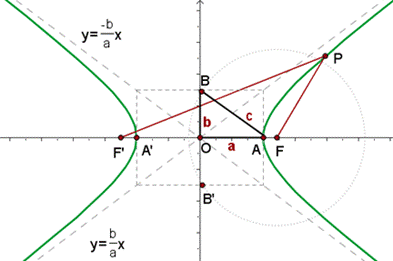
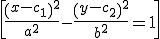
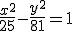
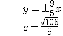

La hipérbola es el lugar geométrico de los puntos del plano cuya diferencia entre las distancias a dos puntos fijos, llamados focos, es siempre la constante 2a. Tiene dos ramas.
|d(P,F) - d(P,F’)| = 2a

Si C(c1,c2) es el centro:

Se puede ver que a2 + b2 = c2 .Sus asíntotas son: y = ±bx/a
La excentricidad de una hipérbola es el cociente: e = c/a. Se puede ver que e > 1.
Puedes ver hipérbolas:
– En hiperboloides o hiperboloides parabólicos, que se usan en arquitectura para construir tejados o chimeneas en centrales nucleares, por ejemplo.
– La hipérbolas se usan en navegación en el sistema LORAN (LOng RAnge Navigation). Con este sistema, un barco recibe señales de dos estaciones conocidas, y midiendo la diferencia de tiempos, se coloca en la hipérbola correspondiente a esos focos. Con otro par de estaciones, se obtiene la posición en la intersección de las dos hipérbolas.
Ejercicio. Averigua la excentricidad y las ecuaciones de las asíntotas de la hipérbola:

Soluciones:

\begin{align} & \ y=\pm \frac{9}{5}x \\ & e=\frac{\sqrt{106}}{5} \\ \end{align}